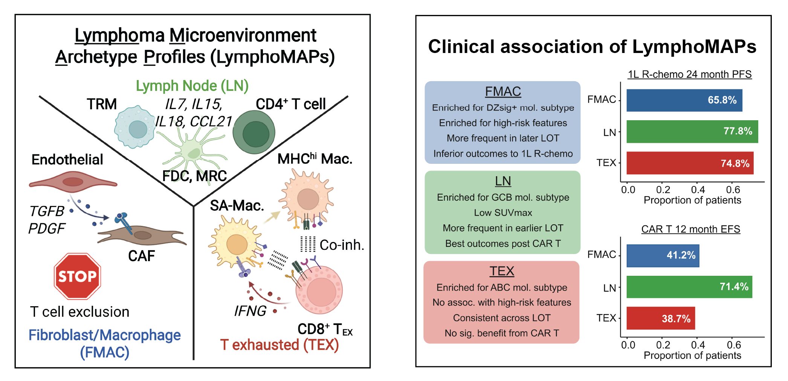
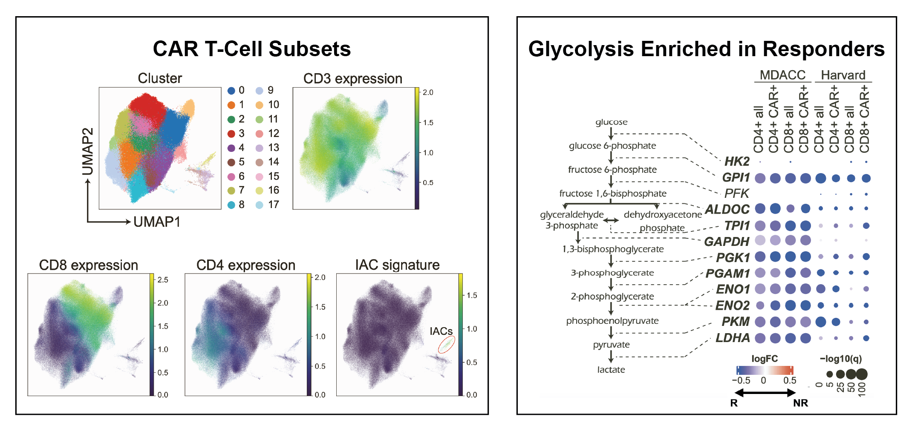
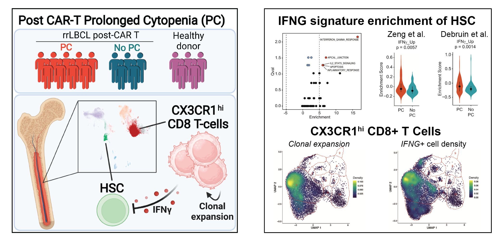
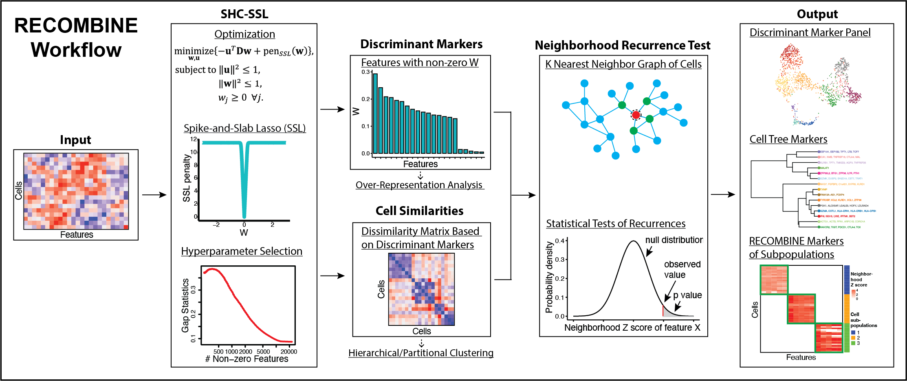
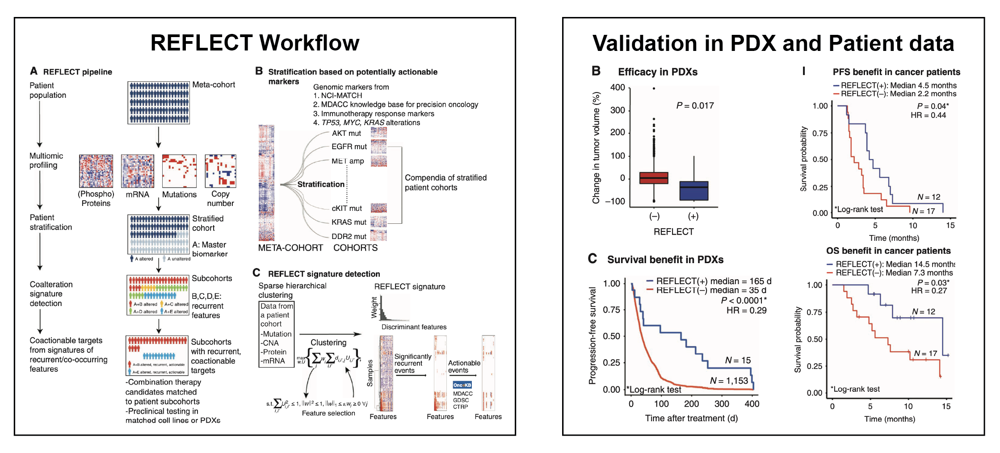
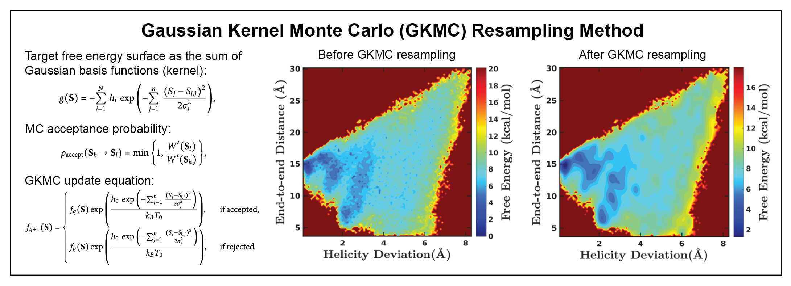

Selected Projects
Tumor Microenvironment & Lymphoma Biology
LymphoMAP (Li et al. Cancer Cell 2025)
-
Single cell atlas of large B-cell lymphoma defines 3 lymphoma microenvironment archetype profiles (LymphoMAPs):
- FMAC: cancer-associated fibroblasts and tumor-associated macrophages with low T cell infiltration
- LN: lymph node architectural cell types with naive and memory T cells
- TEX: activated macrophages and exhausted CD8+ T cells
- LymphoMAPs are associated with outcome to 1L R-chemo and 2L+ CAR T-cell therapy.
- Each LymphoMAP has targetable biology.

CAR T Cell Therapy
Single Cell Atlas of CAR T Cells (Li et al. Cancer Cell 2023)
- A resource of single-cell data from the CD19 CAR T-cell infusion products.
- Clustering identified CD8+ and CD4+ T cells, and previously reported ICANS-associated cells (IACs).
- Cells from responders had significantly higher expression of glycolysis pathway genes.
- Metabolic fitness supports effector function of CAR T cells and underlies CAR T response.

Prolonged Cytopenia Following CAR T-Cell Therapy (Strati, Li, Deng et al. Cell Reports Medicine 2023)
- Prolonged cytopenia (PC) is associated with inferior outcomes following CAR T-cell therapy.
- Bone marrow from CAR T patients with PC have significantly higher frequencies of clonally-expanded CX3CR1hi cytotoxic CD8 T cells expressing IFNγ.
- Hematopoietic stem cells from CAR T patients with PC bear signatures of IFNγ response.
- This has led to a clinical trial evaluating emapalumab, an anti–IFN-γ antibody, for treating CAR T-associated prolonged cytopenia (NCT06285825).

Bioinformatics & Pan-Cancer Genomics
Recurrent Composite Markers of Cell Types and States (Li et al. bioRxiv 2023)
- RECOMBINE (Recurrent Composite Markers for Biological Identities with Neighborhood Enrichment) is a novel statistical learning framework to identify optimized, composite marker sets that distinguish hierarchical cell subpopulations.
- Validation using both simulated and biological datasets demonstrates that RECOMBINE is robust to hyperparameter variation and data sparsity, and achieves higher accuracy in identifying discriminative markers compared to existing approaches.
- RECOMBINE is particularly powerful for datasets characterized by continuous cell-state transitions, where defining discrete boundaries is inappropriate.
- RECOMBINE identifies key cell type markers and generates robust gene panels for targeted spatial profiling.

Precision Combination Therapy Selection (Li et al. Cancer Discovery 2022)
- REFLECT (REcurrent Features LEveraged for Combination Therapy) is a machine learning framework to detect oncogenic co-alterations from multi-omics data.
- REFLECT maps recurrent co-alteration signatures in patient cohorts to combination therapies.
- REFLECT-predicted combination drugs were validated by data from PDXs, in vitro drug screens, and a combination therapy clinical trial.

Biophysics
Gaussian Kernel Monte Carlo Resampling Method (Li et al. Journal of Chemical Physics 2025)
- Gaussian kernel Monte Carlo (GKMC) resampling is a robust approach for high-quality free energy surface construction.
- The target free energy surface is mapped as the sum of local Gaussian basis functions; the height of each Gaussian basis function is recursively obtained through MC resampling of the simulation data.
- The smooth free energy surfaces accurately represent simulated probability distributions.
- Because the data noise is effectively removed, the local free-energy features are constructed much more accurately and informatively.

Generalized Orthogonal Space Tempering Method (Lu, Li et al. Journal of Chemical Theory and Computation 2016)
-
Generalized orthogonal space tempering is a physics-based sampling method for synchronous acceleration of molecular fluctuations associated with both protein conformational changes and slow environment responses.
- In the Hamiltonian perturbation part, a solvent-accessible-surface- area-dependent term is introduced to implicitly perturb near-solute water−water fluctuations.
- In the orthogonal space response part, the generalized force order parameter comprises a two-dimension order parameter set, in which essential solute−solvent and solute−solute components are separately treated.
- With a fully automated sampling protocol, the method enabled repetitive folding and unfolding of the solvated peptide within a single continuous trajectory and allowed for detailed constructions of deca-alanine folding/unfolding free energy surfaces.
- Our assessment analysis suggests that protein conformational changes are driven by the compensating and cooperative fluctuations of protein internal and protein−water interactions.